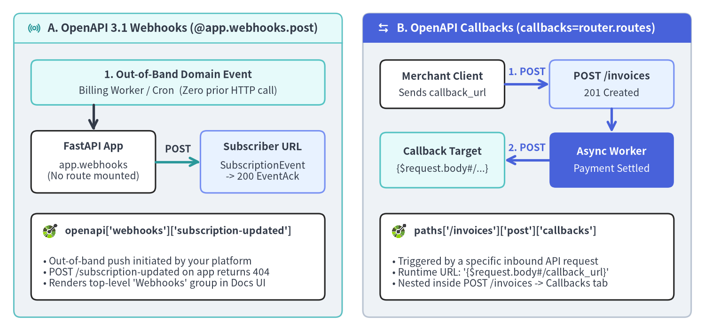

Webhooks, Callbacks, SDKs & Docs UI
Because FastAPI v0.162.2 compiles route metadata directly into OpenAPI 3.1.0 and JSON Schema 2020-12, the same type-annotated models power outbound event contracts (app.webhooks and callbacks), ergonomic TypeScript/Python SDK code generation (generate_unique_id_function), and air-gapped Swagger UI / ReDoc portals.

Source Code
from drawlib.canvas import save, setup
from drawlib.icons import code, phosphor
from drawlib.lines import line
from drawlib.shapes import rectangle
from drawlib.smartarts import Panel
from drawlib.styles import Styles
from drawlib.text import text
setup(width=204, height=96, dpi=150)
# ==========================================================================
# Left Panel: OpenAPI 3.1 Webhooks (@app.webhooks.post)
# ==========================================================================
p_wh = Panel(
"A. OpenAPI 3.1 Webhooks (@app.webhooks.post)",
style=Styles.Neutral.patch(shape_r=2.0),
header_style=Styles.SecondaryNeutral.patch(shape_line_width=1.2),
text_style=Styles.DarkBold.patch(text_size=11.5),
icon=phosphor.broadcast,
icon_style=Styles.SecondaryBold,
header_variant="filled",
header_height=8.5,
)
p_wh.draw((4.0, 4.0), width=95.0, height=88.0)
# Row 1 (y=72.0): Domain Trigger (cx=51.5, width=85.0 -> x=9..94, y=65.5..78.5)
rectangle((51.5, 72.0), width=85.0, height=13.0, style=Styles.SecondaryNeutral.patch(shape_r=1.8))
text((51.5, 74.4), "1. Out-of-Band Domain Event", style=Styles.DarkBold.patch(text_size=10.5))
text((51.5, 69.6), "Billing Worker / Cron (Zero prior HTTP call)", style=Styles.Dark.patch(text_size=10.0))
# Vertical Arrow directly into FastAPI App (x=27.0, y=65.5 -> 58.0, 7.5u gap)
line((27.0, 65.5), (27.0, 58.0), arrow_head="->", style=Styles.DarkBold)
# Row 2 (y=49.0): Provider Push -> Subscriber Server (height=18.0 -> y=40..58)
rectangle((27.0, 49.0), width=36.0, height=18.0, style=Styles.White.patch(shape_r=1.8))
text((27.0, 53.5), "FastAPI App", style=Styles.DarkBold.patch(text_size=10.5))
text((27.0, 46.5), "app.webhooks\n(No route mounted)", style=Styles.Dark.patch(text_size=10.0))
line((45.0, 49.0), (58.0, 49.0), arrow_head="->", style=Styles.SecondaryBold)
text((51.5, 52.8), "POST", style=Styles.DarkBold.patch(text_size=10.0))
rectangle((76.0, 49.0), width=36.0, height=18.0, style=Styles.PrimaryNeutral.patch(shape_r=1.8))
text((76.0, 53.5), "Subscriber URL", style=Styles.DarkBold.patch(text_size=10.5))
text((76.0, 46.5), "SubscriptionEvent\n-> 200 EventAck", style=Styles.Dark.patch(text_size=10.0))
# Row 3 (y=21.5): Emitted OpenAPI Schema Card (cx=51.5, width=85.0 -> x=9..94, y=9..34)
rectangle((51.5, 21.5), width=85.0, height=25.0, style=Styles.White.patch(shape_r=1.8))
code.openapi((14.5, 29.0), width=4.6, style=Styles.SecondaryBold)
text(
(18.8, 29.0),
"openapi['webhooks']['subscription-updated']",
style=Styles.DarkBold.patch(text_size=10.2, halign="left"),
)
text(
(12.5, 17.0),
"• Out-of-band push initiated by your platform\n• POST /subscription-updated on app returns 404\n• Renders top-level 'Webhooks' group in Docs UI",
style=Styles.Dark.patch(text_size=10.0, halign="left"),
)
# ==========================================================================
# Right Panel: OpenAPI Callbacks (callbacks=router.routes)
# ==========================================================================
p_cb = Panel(
"B. OpenAPI Callbacks (callbacks=router.routes)",
style=Styles.Neutral.patch(shape_r=2.0),
header_style=Styles.PrimaryFlat,
text_style=Styles.WhiteBold.patch(text_size=11.5),
icon=phosphor.arrows_left_right,
icon_style=Styles.WhiteBold,
header_variant="filled",
header_height=8.5,
)
p_cb.draw((105.0, 4.0), width=95.0, height=88.0)
# Row 1 (y=71.5): Inbound Request (height=14.0 -> y=64.5..78.5)
rectangle((128.0, 71.5), width=36.0, height=14.0, style=Styles.White.patch(shape_r=1.8))
text((128.0, 73.9), "Merchant Client", style=Styles.DarkBold.patch(text_size=10.5))
text((128.0, 69.1), "Sends callback_url", style=Styles.Dark.patch(text_size=10.0))
line((146.0, 71.5), (159.0, 71.5), arrow_head="->", style=Styles.PrimaryBold)
text((152.5, 75.2), "1. POST", style=Styles.PrimaryBold.patch(text_size=10.0))
rectangle((177.0, 71.5), width=36.0, height=14.0, style=Styles.PrimaryNeutral.patch(shape_r=1.8))
text((177.0, 73.9), "POST /invoices", style=Styles.DarkBold.patch(text_size=10.5))
text((177.0, 69.1), "201 Created", style=Styles.Dark.patch(text_size=10.0))
# Vertical Trigger Arrow on Right (64.5 -> 57.5, 7.0u gap)
line((177.0, 64.5), (177.0, 57.5), arrow_head="->", style=Styles.PrimaryBold)
# Row 2 (y=49.5): Async Callback Push (height=16.0 -> y=41.5..57.5)
rectangle((177.0, 49.5), width=36.0, height=16.0, style=Styles.PrimaryFlat.patch(shape_r=1.8))
text((177.0, 52.0), "Async Worker", style=Styles.WhiteBold.patch(text_size=10.5))
text((177.0, 47.0), "Payment Settled", style=Styles.White.patch(text_size=10.0))
line((159.0, 49.5), (146.0, 49.5), arrow_head="->", style=Styles.PrimaryBold)
text((152.5, 53.2), "2. POST", style=Styles.PrimaryBold.patch(text_size=10.0))
rectangle((128.0, 49.5), width=36.0, height=16.0, style=Styles.SecondaryNeutral.patch(shape_r=1.8))
text((128.0, 52.0), "Callback Target", style=Styles.DarkBold.patch(text_size=10.5))
text((128.0, 47.0), "{$request.body#/...}", style=Styles.Dark.patch(text_size=10.0))
# Row 3 (y=21.5): Emitted OpenAPI Schema Card (cx=152.5, width=85.0 -> x=110..195, y=9..34)
rectangle((152.5, 21.5), width=85.0, height=25.0, style=Styles.White.patch(shape_r=1.8))
code.openapi((115.5, 29.0), width=4.6, style=Styles.PrimaryBold)
text(
(119.8, 29.0),
"paths['/invoices']['post']['callbacks']",
style=Styles.DarkBold.patch(text_size=10.2, halign="left"),
)
text(
(113.5, 17.0),
"• Triggered by a specific inbound API request\n• Runtime URL: '{$request.body#/callback_url}'\n• Nested inside POST /invoices -> Callbacks tab",
style=Styles.Dark.patch(text_size=10.0, halign="left"),
)
save()
1. OpenAPI 3.1 Webhooks vs Request-Scoped Callbacks
Asynchronous HTTP integrations reverse the client/server role: your backend sends an outbound POST request to a customer's HTTP server. OpenAPI 3.1.0 models two distinct reverse-HTTP patterns, and FastAPI supports both natively:
| Dimension | OpenAPI 3.1 Webhooks (@app.webhooks.post) |
OpenAPI Callbacks (callbacks=router.routes) |
|---|---|---|
| Trigger Event | Out-of-band domain event (cron billing renewal, account update) | Direct follow-up to a specific inbound HTTP call (POST /invoices) |
| Target URL Source | Pre-registered in subscriber dashboard settings | Supplied dynamically per request ("{$request.body#/callback_url}") |
| OpenAPI Location | Top-level openapi["webhooks"][event_name] |
Nested under paths[path][method]["callbacks"][route_name] |
| Inbound Route Mounted? | No — purely documents the outbound payload & expected 2xx |
No on the callback router; only the parent @app.post is mounted |
Declaring @app.webhooks and Dynamic callbacks
app.webhooks is a dedicated APIRouter instance attached to FastAPI. Decorating a function with @app.webhooks.post("subscription-updated") extracts its Pydantic request body, PEP 727 Doc() metadata, and response schemas into components.schemas and openapi["webhooks"] without exposing a callable endpoint on your server.
Conversely, for request-triggered notifications, create a standalone APIRouter(), define the outbound contract using an OpenAPI runtime expression such as "{$request.body#/callback_url}", and pass callbacks=callback_router.routes to the initiating path operation:
from typing import Annotated
from annotated_doc import Doc
from fastapi import APIRouter, FastAPI
from pydantic import BaseModel, ConfigDict, Field, HttpUrl
app = FastAPI(title="Billing & Events API", version="1.0.0")
class SubscriptionEvent(BaseModel):
model_config = ConfigDict(extra="forbid")
username: str
monthly_fee: float
plan_tier: str
class EventAck(BaseModel):
ok: bool = True
# 1. OpenAPI 3.1 Webhook: documented under openapi["webhooks"], zero inbound route
@app.webhooks.post("subscription-updated", status_code=200)
def subscription_updated(
body: Annotated[
SubscriptionEvent,
Doc("Outbound JSON event pushed by our billing worker to subscriber URLs."),
],
) -> EventAck:
return EventAck()
# 2. OpenAPI Callback: tied to inbound POST /invoices & caller's callback_url
class InvoiceRequest(BaseModel):
model_config = ConfigDict(extra="forbid")
invoice_id: str = Field(pattern=r"^inv_[0-9]+$")
amount_cents: int = Field(gt=0)
callback_url: HttpUrl
class InvoicePaymentResult(BaseModel):
invoice_id: str
paid: bool
invoices_callback_router = APIRouter()
@invoices_callback_router.post("{$request.body#/callback_url}", status_code=200)
def invoice_notification(body: InvoicePaymentResult) -> EventAck:
"""Callback fired to the caller-supplied `callback_url` once payment settles."""
return EventAck()
@app.post("/invoices", callbacks=invoices_callback_router.routes, status_code=201)
async def create_invoice(invoice: InvoiceRequest) -> dict[str, str]:
return {"invoice_id": invoice.invoice_id, "status": "queued"}
When your FastAPI service acts as the receiver of third-party webhooks (an ordinary @app.post("/hooks/stripe") endpoint), read the raw await request.body() bytes inside a dependency and verify the provider's HMAC-SHA256 timestamped signature via hmac.compare_digest() before trusting the payload (see Authentication & OAuth2 Scopes).
2. Clean SDK Generation (generate_unique_id_function)
Client code generators—such as @hey-api/openapi-ts for TypeScript/React frontends and openapi-python-client for internal Python microservices—derive generated method names directly from each operation's OpenAPI operationId.

Source Code
from drawlib.canvas import save, setup
from drawlib.icons import phosphor
from drawlib.lines import line
from drawlib.shapes import rectangle
from drawlib.smartarts import CardList, ChevronProcess, Panel
from drawlib.styles import Styles
from drawlib.text import text
setup(width=204, height=98, dpi=150)
outer = Panel(
"OpenAPI 3.1 Contract -> Clean SDK Codegen & Air-Gapped Docs UI",
style=Styles.Neutral.patch(shape_r=2.0),
header_style=Styles.PrimaryNeutral.patch(shape_line_width=1.2),
text_style=Styles.DarkBold.patch(text_size=12.0),
icon=phosphor.rocket_launch,
icon_style=Styles.PrimaryBold,
header_variant="filled",
header_height=8.5,
)
outer.draw((4.0, 4.0), width=196.0, height=90.0)
# Top Row: 4-Stage SDK Generation Pipeline (y=70..82.5)
sdk_proc = ChevronProcess(
style=Styles.Neutral,
text_style=Styles.DarkBold.patch(text_size=10.5),
description_style=Styles.Dark.patch(text_size=10.0),
corner_angle=60.0,
spacing=1.6,
flat_left_end=True,
)
sdk_proc.add("1. Tagged Route", description="tags=['items'], read_item")
sdk_proc.add(
"2. Unique ID Fn",
description="items-read_item",
style=Styles.PrimaryFlat,
text_style=Styles.WhiteBold.patch(text_size=10.5),
description_style=Styles.White.patch(text_size=10.0),
)
sdk_proc.add("3. openapi.json", description="OpenAPI 3.1 + x-logo", style=Styles.PrimaryNeutral)
sdk_proc.add("4. Typed SDKs", description="openapi-ts & Python", style=Styles.SecondaryNeutral)
sdk_proc.draw(xy=(8.0, 70.0), width=188.0, height=12.5)
# Middle Callout Strip: Default vs Custom operationId (y=58.0, height=8.5)
rectangle((54.0, 58.0), width=92.0, height=8.5, style=Styles.White.patch(shape_r=1.5))
text(
(54.0, 58.0),
"Default ID: read_item_items__item_id__get() [Verbose]",
style=Styles.Dark.patch(text_size=10.0),
)
line((100.0, 58.0), (107.0, 58.0), arrow_head="->", style=Styles.PrimaryBold)
rectangle((151.5, 58.0), width=89.0, height=8.5, style=Styles.PrimaryNeutral.patch(shape_r=1.5))
text(
(151.5, 58.0),
"Custom ID: ItemsService.readItem() [Clean SDK]",
style=Styles.DarkBold.patch(text_size=10.2),
)
# Bottom Row: 3 Docs UI Deployment Modes (y=8.0..50.5, height=42.5, widths=60.0 at x=8, 72, 136)
p_tuned = Panel(
"1. Tuned Docs UI",
style=Styles.White.patch(shape_r=1.8),
header_style=Styles.SecondaryNeutral.patch(shape_line_width=1.0),
text_style=Styles.DarkBold.patch(text_size=10.8),
icon=phosphor.gear,
icon_style=Styles.SecondaryBold,
header_variant="filled",
header_height=8.0,
)
p_tuned.draw((8.0, 8.0), width=60.0, height=42.5)
b1_xy, b1_w, b1_h = p_tuned.get_content_box((8.0, 8.0), width=60.0, height=42.5, padding=(2.6, 2.6))
cl1 = CardList(
style=Styles.Neutral,
text_style=Styles.DarkBold.patch(text_size=10.2),
description_style=Styles.Dark.patch(text_size=10.0),
badge_style=Styles.SecondaryNeutral,
badge_text_style=Styles.DarkBold.patch(text_size=10.0),
spacing=2.2,
)
cl1.add("swagger_ui_parameters", "Filter, persistAuth, theme", badge_text="A")
cl1.add("Custom app.openapi()", "Cached spec + ReDoc x-logo", badge_text="B")
cl1.draw(b1_xy, width=b1_w, height=b1_h)
p_air = Panel(
"2. Air-Gapped Self-Host",
style=Styles.PrimaryNeutral.patch(shape_r=1.8),
header_style=Styles.PrimaryFlat,
text_style=Styles.WhiteBold.patch(text_size=10.8),
icon=phosphor.shield_check,
icon_style=Styles.WhiteBold,
header_variant="filled",
header_height=8.0,
)
p_air.draw((72.0, 8.0), width=60.0, height=42.5)
b2_xy, b2_w, b2_h = p_air.get_content_box((72.0, 8.0), width=60.0, height=42.5, padding=(2.6, 2.6))
cl2 = CardList(
style=Styles.White,
text_style=Styles.DarkBold.patch(text_size=10.2),
description_style=Styles.Dark.patch(text_size=10.0),
badge_style=Styles.PrimaryFlat,
badge_text_style=Styles.WhiteBold.patch(text_size=10.0),
spacing=2.2,
)
cl2.add("docs_url=None + Local JS", "get_swagger_ui_html() static", badge_text="A")
cl2.add("Zero External CDN", "Strict CSP script-src 'self'", badge_text="B")
cl2.draw(b2_xy, width=b2_w, height=b2_h)
p_lock = Panel(
"3. Conditional Lock",
style=Styles.White.patch(shape_r=1.8),
header_style=Styles.SecondaryNeutral.patch(shape_line_width=1.0),
text_style=Styles.DarkBold.patch(text_size=10.8),
icon=phosphor.lock,
icon_style=Styles.SecondaryBold,
header_variant="filled",
header_height=8.0,
)
p_lock.draw((136.0, 8.0), width=60.0, height=42.5)
b3_xy, b3_w, b3_h = p_lock.get_content_box((136.0, 8.0), width=60.0, height=42.5, padding=(2.6, 2.6))
cl3 = CardList(
style=Styles.Neutral,
text_style=Styles.DarkBold.patch(text_size=10.2),
description_style=Styles.Dark.patch(text_size=10.0),
badge_style=Styles.SecondaryNeutral,
badge_text_style=Styles.DarkBold.patch(text_size=10.0),
spacing=2.2,
)
cl3.add("openapi_url=None", "Toggled via Settings / Env", badge_text="A")
cl3.add("404 on /docs & Schema", "Export SDKs offline in CI", badge_text="B")
cl3.draw(b3_xy, width=b3_w, height=b3_h)
save()
By default, fastapi.utils.generate_unique_id concatenates the function name, path template, and HTTP verb (read_item_items__item_id__get), preventing collisions across untagged routes but producing verbose SDK method names. Passing generate_unique_id_function to FastAPI(...) (or individual APIRouters) formats {tag}-{function_name}, which SDK generators split cleanly into namespace classes and concise method calls.
Custom operationId, swagger_ui_parameters & Cached app.openapi()
You can combine generate_unique_id_function, swagger_ui_parameters (serialized via _html_safe_json to prevent <script> tag breakouts), and a cached app.openapi override for vendor extensions like ReDoc's info["x-logo"]:
from fastapi import FastAPI
from fastapi.openapi.utils import get_openapi
from fastapi.routing import APIRoute
from pydantic import BaseModel
def custom_generate_unique_id(route: APIRoute) -> str:
if route.tags:
return f"{route.tags[0]}-{route.name}"
return route.name
app = FastAPI(
title="Inventory SDK API",
version="2.4.0",
generate_unique_id_function=custom_generate_unique_id,
swagger_ui_parameters={
"syntaxHighlight": {"theme": "obsidian"},
"docExpansion": "none",
"persistAuthorization": True,
"filter": True,
},
)
class ItemSummary(BaseModel):
id: str
name: str
@app.get("/items/{item_id}", tags=["items"])
async def read_item(item_id: str) -> ItemSummary:
return ItemSummary(id=item_id, name="Precision Sensor")
def custom_openapi() -> dict[str, object]:
if app.openapi_schema:
return app.openapi_schema
openapi_schema = get_openapi(
title=app.title,
version=app.version,
summary="Type-safe OpenAPI 3.1 schema optimized for SDK codegen",
routes=app.routes,
)
openapi_schema["info"]["x-logo"] = {
"url": "https://fastapi.tiangolo.com/img/logo-margin/logo-teal.png",
"altText": "Inventory SDK API Logo",
}
app.openapi_schema = openapi_schema
return app.openapi_schema
app.openapi = custom_openapi # type: ignore[method-assign]
Remember that FastAPI v0.162.2 defaults to separate_input_output_schemas=True (see Response Serialization & OpenAPI 3.1), emitting distinct Model-Input and Model-Output schemas whenever fields have default values so generated frontend SDKs mark optional input fields accurately while guaranteeing populated response properties.
3. Conditional OpenAPI & Air-Gapped Self-Hosted Docs UI
Disabling OpenAPI in Locked Environments (openapi_url=None)
In high-security or internal-only deployments where interactive documentation must not be exposed on live ingress, set openapi_url=None conditionally via pydantic-settings (see pydantic-settings & SQL Databases). When openapi_url is None, FastAPI skips registering /openapi.json, /docs, /docs/oauth2-redirect, and /redoc altogether while still letting your CI pipeline call app.openapi() in Python to generate client SDKs.
Self-Hosting Swagger UI & ReDoc Bundles Offline
By default, /docs and /redoc load JavaScript, CSS, and fonts from cdn.jsdelivr.net and fonts.googleapis.com. For air-gapped networks or strict Content Security Policies (Content-Security-Policy: default-src 'self'; script-src 'self'), disable the built-in CDN routes (docs_url=None, redoc_url=None), vendor the static bundles into /static, and wire get_swagger_ui_html(), get_swagger_ui_oauth2_redirect_html(), and get_redoc_html(..., with_google_fonts=False):
from pathlib import Path
from fastapi import FastAPI
from fastapi.openapi.docs import (
get_redoc_html,
get_swagger_ui_html,
get_swagger_ui_oauth2_redirect_html,
)
from fastapi.responses import HTMLResponse
from fastapi.staticfiles import StaticFiles
def create_airgapped_docs_app(static_dir: Path, locked_prod: bool = False) -> FastAPI:
if locked_prod:
return FastAPI(title="Internal Vault API", openapi_url=None)
app = FastAPI(
title="Air-Gapped Control Plane",
docs_url=None,
redoc_url=None,
)
app.mount("/static", StaticFiles(directory=static_dir), name="static")
@app.get("/docs", include_in_schema=False)
async def custom_swagger_ui_html() -> HTMLResponse:
assert app.openapi_url is not None
return get_swagger_ui_html(
openapi_url=app.openapi_url,
title=f"{app.title} - Swagger UI",
oauth2_redirect_url=app.swagger_ui_oauth2_redirect_url,
swagger_js_url="/static/swagger-ui-bundle.js",
swagger_css_url="/static/swagger-ui.css",
swagger_favicon_url="/static/favicon.png",
)
assert app.swagger_ui_oauth2_redirect_url is not None
@app.get(app.swagger_ui_oauth2_redirect_url, include_in_schema=False)
async def swagger_ui_redirect() -> HTMLResponse:
return get_swagger_ui_oauth2_redirect_html()
@app.get("/redoc", include_in_schema=False)
async def redoc_html() -> HTMLResponse:
assert app.openapi_url is not None
return get_redoc_html(
openapi_url=app.openapi_url,
title=f"{app.title} - ReDoc",
redoc_js_url="/static/redoc.standalone.js",
redoc_favicon_url="/static/favicon.png",
with_google_fonts=False,
)
return app
Pair this chapter's frontend delivery patterns in SPA frontend(), StaticFiles & Mounts with typed environment configuration and database session lifecycles in Chapter 8: pydantic-settings & SQL Databases.